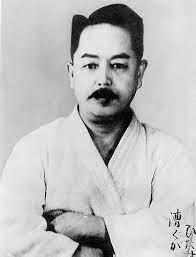

Kenwa Mabuni(摩文仁 賢和) was the founder of Shito-ryu(糸東流). He was one of the first karateka to teach karate in mainland Japan and was credited for developing this style. Born in Shuri on Okinawa in 1889, he studied and researched both Shuri-te(首里手) and Naha-te (那覇手), and began his training in the art of Shuri-Te at the age of 13 under Anko Itosu (糸州 安恒). After that, he began learning Naha-Te under Kanryo Higaonna (東恩納 寛量). Mabuni derived the name for Shito-ryu(糸東流) from the first Kanji character in their names, "Shi (糸)" from Ito(su) and "To (東)" from Higashi(onna). Kenwa Mabuni passed away on May 23, 1952. Mabuni also had a relationship with Hisataka Kori. Mabuni is regarded as a Kata specialist, while Hisataka is a Kumite/Shiai specialist